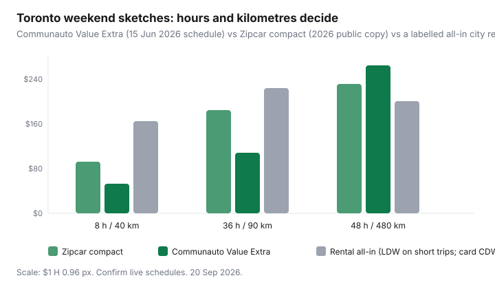

Transportation · Weekend trips
Car rental vs car-share for Canadian weekends: which is cheaper for occasional drivers?
Occasional Canadian drivers overpay in two opposite ways. They take the desk insurance on a $49 “weekend special,” or they keep a Communauto Open car for 36 hours and 380 highway kilometres. The cheaper product is the one that matches hours parked and kilometres driven — not the app with the nicer map pin. This is a weekend chooser for Toronto, Montréal, and other cities with both traditional rentals and station-based car-share. Ownership TCO stays in the Communauto vs Zipcar vs owning guide and the 2026 car-cost dashboard.
Disclosure: Car-rental deals, car-share memberships, and travel cards with rental collision coverage are opportunity types. Saving Optimizer may earn a commission if we later add partner links. We do not currently claim rental-desk, Communauto, Zipcar, or card partnerships. Confirm live fee schedules and your card’s booklet before you decline a waiver.
Key takeaways
- Price the all-in rental: base, LDW/CDW, additional driver, young-driver, fuel, kilometre cap, and airport concession — not the homepage tile.
- Communauto Toronto Value Extra (fee schedule effective 15 Jun 2026): weekday day max $26.50 plus 34¢/km; some weekend surcharges add about $4/day. Gas and the plan’s damage rules are in the membership, not a desk upsell.
- Zipcar Toronto compact sketch (2026 public copy): about $78/day, 200 km included, then $0.50/km, plus $9/month or $90/year.
- A labelled 48-hour, 90 km cottage-adjacent weekend often favours Communauto Value Extra. A 500 km highway loop often favours a traditional rental with unlimited kilometres — if you decline junk insurance you already hold on a card.
- Owning still loses when the car’s job is two weekends a month. Ratehub’s blended 2026 average is $1,373/month (29 Apr 2026).
All-in rental: base, insurance upsells, fuel, kilometre limits
The advertised compact rate is a teaser. Canadian weekend desks still sell a familiar stack. Labelled 2026 city-branch bands — confirm the quote, not a US blog:
- Base: a compact for Friday–Monday can land around $40–$90/day before tax in Toronto or Montréal if you book early; last-minute airport inventory is worse.
- Loss-damage waiver (LDW/CDW): often $20–$35/day. This is the line cards sometimes cover on rentals.
- Liability top-up and personal-accident: usually skippable if your auto or travel medical already exists. Ask; do not guess at the counter with a queue behind you.
- Additional driver / under-25: $10–$25/day is common. A spouse who will share the wheel can erase the “cheap” rate.
- Fuel: prepaid full-to-full is rarely the win. Bring the car back full at a station you choose.
- Kilometres: “200 km/day then $0.20–$0.35/km” is a trap on a 400 km cottage loop. Unlimited kilometres is the product you wanted.
Worked sketch (labelled, not a quote): $58/day × 2 = $116, plus $28/day LDW = $56, plus $15 additional driver × 2 = $30, plus tax on a Toronto rental, plus a $14 fuel swing if you return it a quarter low. You have left $230 before a single kilometre of fun. That is the number to compare to car-share — not $58.
Car-share day rates and included insurance and gas
Station-based car-share sells a different bundle. Zipcar’s Toronto page treats gasoline, insurance/damage protection as defined in the member contract, reserved parking, and 200 km/day as included. Communauto’s Toronto PDF (effective 15 Jun 2026) is plan-specific: Open looks free until you see ~$16.10/hour (first-day max $60) plus kilometres; Value Extra is $30/month, a $500 refundable bond, $3.75/hour and a $26.50 weekday day max, 34¢/km, taxes extra. Weekend hours can add about 40¢/hour or $4/day on some plans.
What you still pay: membership, application fees, extra kilometres, late return, smoking/cleaning, tickets, and FLEX one-way premiums where they exist. What you do not pay is a $28 desk waiver every Saturday. Read the live schedule on Communauto Toronto or Zipcar Toronto — plans move.
| Trip shape | Zipcar compact | Communauto Value Extra | Traditional rental (all-in sketch) |
|---|---|---|---|
| 8 hours, 40 km (IKEA + groceries) | Daily ~$78 (hourly can win if shorter) | ~$30.50 day-ish + ~$14 km = ~$45 + $30/mo if not already paid | A one-day rental + LDW often $110–$160 — usually loses |
| 36 hours, 90 km (in-town weekend) | ~$156 + membership; 200 km/day covers this | 2 × ~$30.50 + ~$31 km ≈ $92 + membership | $150–$230 all-in if you took the desk waiver |
| 48 hours, 480 km (highway cottage) | $156 + ~80 extra km × $0.50 ≈ $196+ | 2 × ~$30.50 + $163 km ≈ $224 — kilometres dominate | Unlimited-km rental, waive LDW with a card: often the win |

Airport vs downtown pickup logistics
Airport counters add concession recoveries, shuttle time, and “the only compact left is a crossover.” Fine when you land at YYZ or YVR with a suitcase and a cottage key. Expensive when you live at King and Bathurst and the airport is a 45-minute detour to save $8 on the base rate. Downtown or east-end city branches, or a Communauto stall you can walk to with groceries, delete that tax. One-way car-share (Communauto FLEX, Evo in Vancouver) can help a station-to-cabin problem; price the one-way premium, do not assume it is a cheaper rental.
Return windows are the other logistics bill. A rental desk closed Sunday night pushes you into a Monday morning drop and an extra day. Car-share late fees are automatic and unsympathetic. Match the product to when you will actually hand the keys back.
Credit-card collision coverage questions to verify
Many Canadian travel and premium cards reimburse collision damage on a rented passenger vehicle when you decline the merchant’s LDW and charge the rental to that card. That is a booklet test, not a forum rumour. Ask these before you wave the desk off:
- Does the card cover Canada (some booklets are US-primary with a Canada rider — still read it)?
- Is there a day cap (often 15–48 consecutive days) and a vehicle-class exclusion (vans, pickups, luxury, value over a dollar cap)?
- Must every driver be a cardmember or household member?
- Do you have to report to the card and the rental company within a set number of days?
- Does it apply to car-share or peer-to-peer? The honest answer is usually no.
If the booklet is a no, the desk waiver is an insurance purchase, not junk. If the booklet is a yes, buying LDW twice is how a $55 compact becomes a $230 weekend. Secondary liability on the card is weaker than people think — your own auto policy or the rental’s included liability still matters. This is education, not a claim-handling service.
Break-even by hours and kilometres
Two axes, one decision:
- Hours high, kilometres low (parked at a friend’s, city errands): car-share day caps, especially Communauto Value Extra if you already pay the $30, beat a rental’s open-to-close clock and desk extras.
- Kilometres high (400 km+): a rental with unlimited kilometres, card CDW, and a city pickup usually beats 34¢ or 50¢ per extra kilometre.
- Hours low, kilometres low (three-hour IKEA): hourly car-share or even a rideshare plus delivery can beat both. Do not rent a day for a lamp.
If you take a Communauto Value Extra car 10 weekends a year and already hold the plan for weekday trips, the $30 membership is a sunk cost — only the day max and kilometres are incremental. Zipcar’s $9/month is cheaper to keep “just in case” if you will not use Communauto’s bond structure. Open is the twice-a-year plan; do not use it for a long weekend unless you like $60 first-day maxes.
When owning still loses to either option
Ratehub’s April 2026 blended cash stack is $1,373/month: principal, interest, $200 parking, $164 insurance, $165 gas, $120 maintenance, $10 admin. Two cottage weekends at $200 all-in is $400. Twelve IKEA-and-airport days on Value Extra will not reach a financed car. Owning wins when the car also does a five-day commute, kids’ sports, or a job site that transit cannot hit — price that calendar, not a slogan.
A paid-off Civic in a free driveway is closer to Ratehub’s non-loan lines (~$659) plus your insurance. Even then, if it sits 26 days a month, the insurance and rust are a subscription to convenience. Run the second-car test in the car-share break-even guide before you renew the plate.
Booking timing tips without junk fees
- Book the rental mid-week for a Friday pickup. Weekend-of inventory is leftovers and upsells.
- Screenshot the rate rules: kilometres, fuel, after-hours drop, and one-way fees.
- Join the rental brand’s free list before you price — members sometimes see the rate you thought was a coupon site exclusive.
- On car-share, reserve the car you can actually reach with luggage. A cheaper stall 2 km away plus a $25 Uber is not cheaper.
- Do not buy prepaid fuel, GPS, or “toll pass convenience” if your phone and a regular fill-up will do.
Chooser rule: write hours, kilometres, pickup location, and whether a card actually covers LDW. Short city weekend → car-share. Long highway loop → unlimited-km rental, waiver declined only if the booklet says yes. Two weekends a month → do not finance a car to avoid an app.
Sources & date stamps
- Communauto Toronto fee schedule effective 15 Jun 2026 — Value Extra day max, hourly, km, weekend notes; taxes extra.
- Zipcar Toronto public membership and compact day/hour copy (2026) — 200 km/day, included gas/insurance as defined in the contract.
- Ratehub, “What is the total cost of owning a car?”, updated 29 Apr 2026 — $1,373 blended monthly.
- Issuer card booklets for rental collision/LDW — verify Canada, vehicle class, and car-share exclusions on your card, not a forum post.
Frequently asked questions
Is car-share cheaper than a weekend rental in Canada?
Often, if you stay under a day’s kilometres and pick up downtown. A labelled Toronto Communauto Value Extra Saturday is about $30.50 plus 34¢/km. A $55 rental plus $28 LDW, fuel, and airport fees can clear $150 before you leave the lot. Long highway kilometres flip it: Zipcar’s 200 km/day then $0.50/km, or a rental with unlimited kilometres, usually wins.
Does my Canadian credit card cover car-share collisions?
Usually not. Card collision/loss-damage waivers are written for traditional rentals when you decline the desk product and pay with the card. Communauto and Zipcar bake their own damage rules into the membership. Read both contracts; do not assume the Amex booklet applies to a pod hatchback.
Should I pick up a rental at the airport for a city weekend?
Only if you are already flying. Airport concession recoveries and shuttle time are a tax on a downtown cottage run. A city branch or a car-share stall within a walk you will do with bags is the cheaper pickup.
When does owning still lose to either option?
When the car exists for two cottage weekends and IKEA. Ratehub’s 2026 blended ownership average is $1,373/month. Two rentals or eight Communauto days will not touch that. A paid-off car in a free driveway is a closer fight — price parking and insurance, not the loan you already finished.
How do I avoid junk fees when I book?
Screenshot the all-in price with taxes, age fees, and additional-driver charges before you reach the desk. Decline prepaid fuel unless the tank math is honest. On car-share, watch the return window and extra-kilometre rate. Book mid-week for a Friday pickup; same-day weekend inventory is the expensive leftover.